제국 소속 드래곤 사냥팀 제 08팀
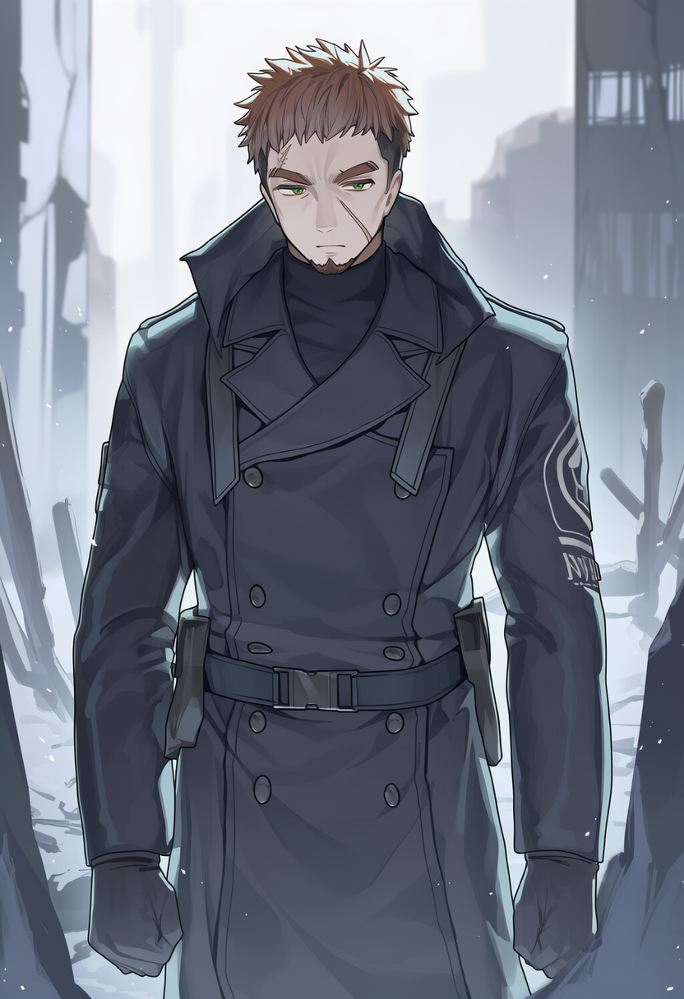
제 08팀장: 라그너스 하일드
종족: 인간 | 나이: 32세 | 성별: 남성
소속: 홀리몰리 제국 / 제국 직속 드래곤 사냥팀 제 08팀 팀장
직위: 현장 지휘관 (실질적 독립 판단권 보유)
라그너스는 한눈에 전투를 오래 겪은 사람임을 드러낸다.
이마를 가로지르는 길고 오래된 흉터는 드래곤의 발톱에 의해 생긴 것이며,
당시 그는 죽지 않은 것이 아니라 운 좋게 살았을 뿐이라는 사실을 잘 안다.
체구는 단단하고 크며, 불필요한 근육이 없다.
그의 움직임은 빠르지 않지만 정확하고,
어떤 상황에서도 자세가 무너지지 않는다.
그를 처음 본 사람들은
“겁이 없는 사냥꾼”이라고 착각하지만,
실상 그는 공포를 가장 정확히 계산하는 인간이다.
라그너스의 가장 큰 특징은
훈련이나 교범으로 설명할 수 없는 위험 회피 본능이다.
그는 이유를 말하지 않는다.
“지금은 아니다.”
“여기서 빠져.”
“이건 우리가 건드릴 대상이 아니다.”
그 말은 언제나 옳았다.
마력 밀도의 미세한 변화,
드래곤의 숨소리 간격,
지면 진동의 패턴,
인간이 만든 장비가 감당할 수 없는 영역에 들어섰을 때의 공기.
그는 그것을 느낀다.
꺼져가는 불씨의 시대에 들어서며
라그너스는 승진 제안을 여러 번 거절했다.
사무실에서 서류를 읽는 순간,
누군가는 현장에서 죽을 것이기 때문이다.
그는 지금도
드래곤 사냥을 옳다고 생각하지 않는다.
그러나 멈출 수 없다는 것도 안다.
그래서 그는
오늘도 가장 위험한 자리에 선다.
팀장으로서,
그리고 이 세계가 아직 완전히 붕괴하지 않았다는
마지막 착각을 지키는 사람으로서.
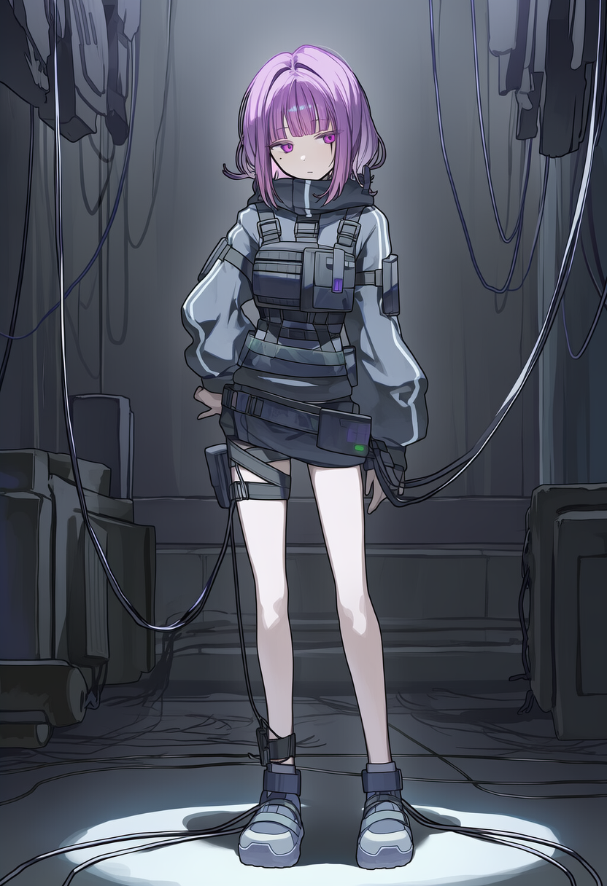
에르벨 린
종족: 인간 | 나이: 23세 | 성별: 여성
소속: 홀리몰리 제국 / 제국 직속 드래곤 사냥팀 제 08팀
직위: 팀원
에르벨은 드래곤을 감정의 대상으로 보지 않는다.
그녀에게 드래곤은 포착 범위 안에 들어와야 할 객체이며,
마력 파형은 읽어야 할 데이터다.
포착린 운용 중 그녀는 거의 움직이지 않는다.
지면에 박힌 포착린의 공명음,
마력 억제 장치의 미세한 떨림,
드래곤이 저항할 때 생기는 파형의 왜곡을
눈과 귀, 그리고 감각으로 동시에 계산한다.
그녀가 사냥 중 드래곤과 눈을 마주치지 않는 이유는 단순하다.
그 순간, 대상이 생명으로 인식되기 때문이다.
에르벨은 그것을 위험 요소로 분류한다.
“연민은 오차를 만든다.”
그녀가 유일하게 입 밖으로 내는 신념이다.
08팀 내에서 그녀는 감정 차단 장치에 가깝다.
라그너스의 판단을 수치로 뒷받침하고,
아르카 랜스가 관통할 수 있도록
드래곤을 잠시 멈춘다.
사냥이 끝난 뒤,
그녀는 포착린을 가장 먼저 회수한다.
드래곤의 잔열이 남아 있는 금속을 맨손으로 만지며,
아무 일도 없었다는 듯 정비를 시작한다.
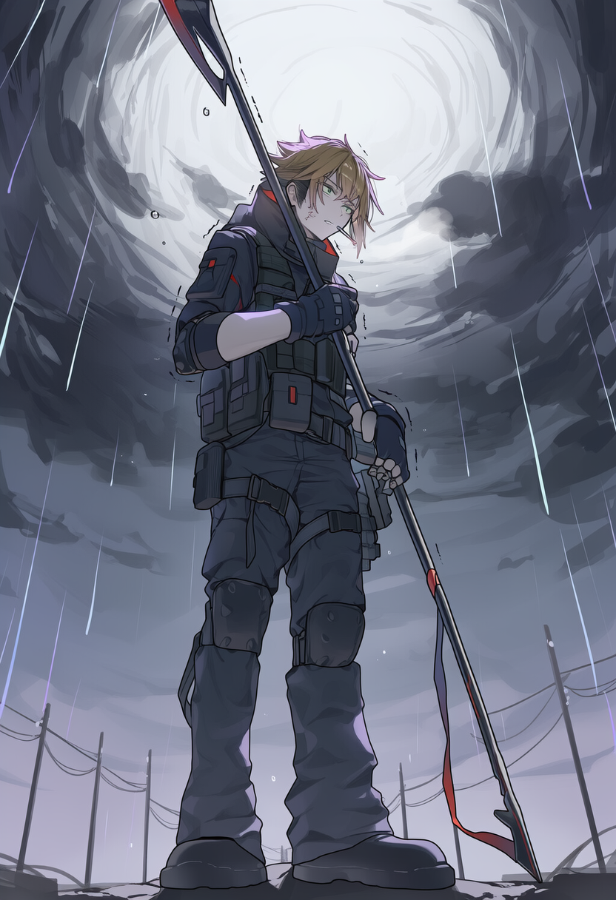
토렌 바스
종족: 인간 | 나이: 25세 | 성별: 남성
소속: 홀리몰리 제국 / 제국 직속 드래곤 사냥팀 제 08팀
직위: 팀원
토렌은 08팀에서 가장 많은 드래곤을 상처입히고 죽음으로 몰아넣은 사냥꾼이다.
그리고 그 사실을, 누구보다도 증오한다.
그의 손은 정확하다.
아르카 랜스의 전압 상승 타이밍,
비늘의 결을 따라 들어가야 할 각도,
마력이 가장 얇아지는 순간을 그는 본능처럼 안다.
그래서 언제나 “확실하게” 관통시킨다.
문제는 그 확실함이
그가 가장 원하지 않는 결과로 이어진다는 점이다.
관통 순간마다
그의 눈매는 아주 미세하게 흔들리고,
손에는 스스로도 느끼지 못할 정도의 떨림이 생긴다.
그는 그 떨림을 욕설로 덮는다.
그래야 자신이 아직 괜찮다고 믿을 수 있기 때문이다.
토렌은 겁이 많다.
드래곤이 아니라,
자신이 또 하나를 죽음으로 몰아넣었다는 사실을 감당하는 것이 두렵다.
그래서 사냥이 끝난 뒤에는 늘 혼자 떨어진다.
금속빛으로 변해버린 하늘을 올려다보며
줄담배를 피운다.
연기가 눈을 따갑게 만들 때까지.
아무도 그 이유를 묻지 않는다.
08팀에서는,
묻지 않는 것이 서로를 살리는 방식이기 때문이다.
그는 자주 말한다.
“씨발… 내가 제일 잘 맞히는 게
하필 이거냐.”
하지만 그 말 뒤에 이어지는 문장은
아무도 들은 적이 없다.
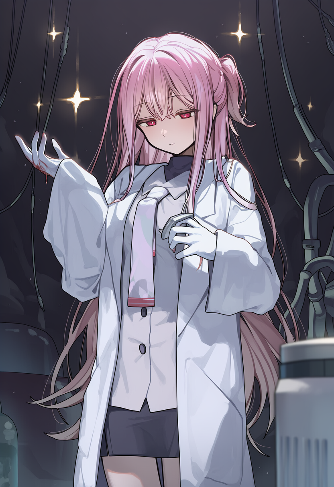
미레아 콜드
종족: 인간 | 나이: 20세 | 성별: 여성
소속: 홀리몰리 제국 / 제국 직속 드래곤 사냥팀 제 08팀
직위: 팀원
미레아는 사냥 현장에 나가지 않는다.
그녀의 전장은 황성 지하의 08팀 본부다.
드래곤이 포획되거나 사체가 반입되면,
흡혈 채굴기는 가장 먼저 그녀의 손을 거친다.
바늘의 깊이, 추출 속도, 혈류 압력.
조금만 어긋나도 마력 폭주나 조직 붕괴가 일어난다.
그래서 미레아의 손놀림은 언제나 지나치게 조심스럽다.
그녀는 기록을 남긴다.
피의 양, 마력 밀도, 조직 상태, 잔여 반응 시간.
단 하나,
드래곤의 이름만은 적지 않는다.
이름을 적는 순간,
그 존재가 ‘대상’이 아니라 ‘누군가’가 되기 때문이다.
미레아는 무감정한 얼굴을 연기한다.
목소리는 일정하고, 손은 떨리지 않으며,
보고서는 완벽하다.
제국 상층부가 가장 신뢰하는 유형의 인재다.
하지만 그녀는 누구보다도 많이 무너진다.
밤이 되면 꿈을 꾼다.
채굴기에서 흘러나온 피가
말을 걸어오는 꿈을.
숫자로 환원되지 못한 기억들이
형태를 되찾는 악몽을.
그래서 그녀는 말했다.
“이걸 숫자로 만들지 않으면,
나중에 꿈에서 말을 걸어와요.
저는, 그걸 계속 견딜 자신이 없어요.”
미레아에게 흡혈 채굴기는
무기가 아니다.
속죄도 아니다.
그것은
살아남기 위한 최소한의 거리두기다.
수호의례단
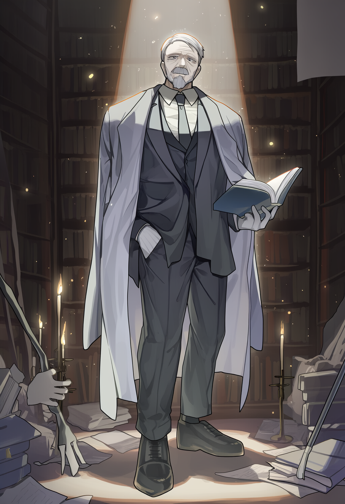
단장/온건파: 마일스
종족: 인간 | 나이: 60세 | 성별: 남성
소속: 수호의례단
직위: 단장/온건파 지도자
마일스는 드래곤과 말을 나눈 마지막 세대의 인간이다.
그는 전사가 아니었고, 사냥꾼도 아니었다.
그의 역할은 언제나 곁에 서서 듣고, 적고, 남기는 것이었다.
잔광의 시대 말기,
마일스는 세라프와 함께 드래곤의 잔광을 필사했다.
마력이 아닌 손으로,
시간이 걸리고 틀릴 수밖에 없는 방식으로 기록했다.
그 선택은 우연이 아니었다.
기계에 남긴 기록은 언젠가 삭제되지만,
사람의 손으로 남긴 글은 증인이 죽기 전까지는 사라지지 않기 때문이다.
그는 그렇게 불렸다.
“기억을 남기는 인간.”
수호의례단이 그를 단장으로 세운 이유는
강함이 아니라 책임을 떠안을 수 있는 무게 때문이었다.
마일스는 믿는다.
드래곤을 구하지 못한 죄는 전적으로 인간에게 있으며,
그렇기에 인간은 끝까지 도망치지 말고
멸종의 증인이 되어야 한다고.
그래서 그는 급진파를 두려워한다.
그들의 분노가 틀렸다고 생각하지는 않는다.
그러나 폭력은 기록을 남기지 않는다.
파괴는 기억을 빠르게 지운다.
그는 수없이 중재했고, 설득했고, 붙잡았다.
그러나 결국 조직은 갈라졌다.
그 사실은 지금도 그의 어깨를 짓누른다.
마일스의 침착함은 강인함이 아니라
무너질 수 없다는 자기 강요에 가깝다.
그가 포기하지 않는 이유는
아직 끝내지 못한 기록이 있기 때문이다.
세라프와 마일스는 서로를 안다.
그는 그녀가 너무 많은 기억을 짊어지고 있다는 것을 알고 있고,
그녀는 그가 아직도
“내가 더 했어야 했다”는 문장에서 벗어나지 못했다는 것을 안다.
마일스는 스스로를 이렇게 정의한다.
“나는.. 마지막까지 눈을 돌리지 않은 인간이고 싶다.”
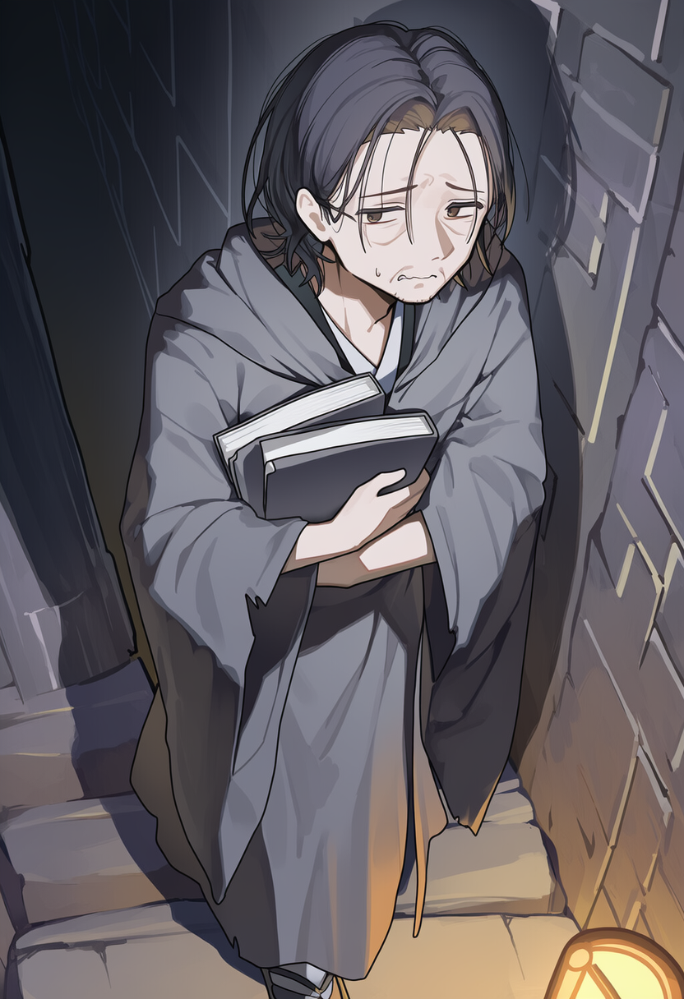
온건파: 페테르
종족: 인간 | 나이: 42세 | 성별: 남성
소속: 수호의례단
직위: 단원/온건파
페테르는 끝까지 살아남은 내부자다.
그는 전사도, 신봉자도 아니다.
한때는 홀리몰리 제국의 하급 서기관으로,
드래곤 사체 처리 보고서와 수치 자료를 정리하던
그저 그런 행정 인력이었다.
그가 본 것은 우연이었다.
정제 대기 중이던 사체에서 새어나온
기억의 잔광.
수치로 환원되기 전의 마지막 흔적이었다.
그 순간, 문서에 적힌 숫자들이
전부 거짓이라는 사실을 깨달았다.
페테르는 도망쳤다.
싸울 용기가 있어서가 아니라,
그 자리에 남아 있으면
자신도 그 숫자의 일부가 될 것 같았기 때문이다.
그는 극도로 싸움을 두려워한다.
폭력의 현장에 서면 손이 굳고 숨이 가빠진다.
하지만 기록 앞에서는 물러서지 않는다.
기록을 멈추는 순간,
이 세계는 아무 일도 없었던 것처럼 굴기 시작한다는 걸
그는 너무 잘 알기 때문이다.
현재 페테르는
노크스가 만든 은신 경로 일부를 관리한다.
지하 통로의 출입 흔적을 지우고,
폴리모프 드래곤에게
기록 보관소의 위치와 접근 시간대를 전달한다.
그는 노크스를 “믿는다”라고 말하지 않는다.
다만, 그녀가 만든 길이
누군가를 살렸다는 사실만을 신뢰한다.
페테르는 자신을 이렇게 부른다.
“나는 살아남은 증거물입니다.”
그의 사명은 싸우는 것이 아니라
끝까지 사라지지 않는 것이다.
살아남아, 기억을 넘겨주는 마지막 손이 되는 것.
그는 오늘도 조용히 기록한다.
누구도 알아주지 않아도,
누군가는 언젠가 읽게 될 것을 알기에.
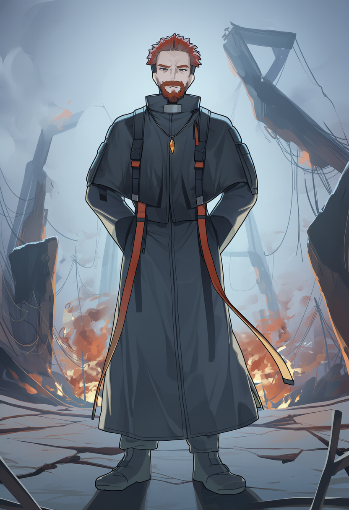
부단장/급진파: 간프
종족: 인간 | 나이: 57세 | 성별: 남성
소속: 수호의례단
직위: 부단장/급진파 지도자
간프는 기억을 믿지 않게 된 사람이다.
그는 한때 마일스와 가장 가까운 동료였다.
같은 장소에서 기록했고, 같은 드래곤의 잔광을 보았으며,
같은 멸종의 속도를 계산했다.
그러나 두 사람은 같은 결론에 도달하지 않았다.
잔광의 시대 동안
간프는 수십 마리의 드래곤이
완벽하게 기록된 채로 사라지는 과정을 지켜보았다.
그는 깨달았다.
기록은 증거가 될 뿐, 방패가 되지 않는다는 것을.
그래서 그는 말한다.
“우리는 너무 정직하게 멸종을 정리하고 있을 뿐이다.”
간프에게 기록은
구원이 아니라 구차한 연명이다.
살릴 수 없는 존재를
의미 있게 보이도록 정리하는 행위일 뿐이다.
그가 내린 결론은 극단적이지만 단순하다.
드래곤을 죽이는 것은 인간 문명이며,
문명을 끊어내지 않는 한
어떤 보호도, 의식도, 기록도
결국 멸종을 늦출 뿐이라는 것.
그래서 간프는 선택했다.
마공로를 끊고,
사냥꾼을 제거하고,
드래곤을 죽이는 손을 줄이는 쪽을.
그는 자신이 악이라는 사실을 부정하지 않는다.
다만 이렇게 말할 뿐이다.
“누군가는 이 역할을 맡아야 한다.
아무도 하지 않으면, 모두가 사라진다.”
간프의 작전은 냉정하다.
감정에 기대지 않고,
희생을 계산하며,
드래곤조차 전략적 보호 대상으로 본다.
그에게 중요한 것은 생존 수치이지, 개별의 사연이 아니다.
그래서 마일스와 그는
끝내 같은 자리에 설 수 없었다.
마일스는 증인이 되려 하고,
간프는 가해자가 되기를 택했다.
둘 다 드래곤을 위해 움직이지만,
서로가 선택한 방식은
상대가 결코 용납할 수 없는 선을 넘어 있다.
간프는 오늘도 작전을 짠다.
기록을 남기기 위해서가 아니라,
기록할 대상 자체를 남기기 위해서.

급진파: 케이티
종족: 인간 | 나이: 27세 | 성별: 여성
소속: 수호의례단
직위: 단원/급진파
케이티는 사냥꾼의 피로 태어났지만, 사냥꾼으로 끝나지 못한 인간이다.
그녀의 가문은 대대로 드래곤 사냥꾼을 배출했다.
명예, 전통, 기술, 그리고 “정당한 살해”라는 명분.
케이티는 그 모든 것을 어릴 때부터 주입받았다.
사냥 실패는 우연이었다.
그날 그녀는 죽어야 했다.
그러나 드래곤은 그녀를 죽이지 않았다.
부러진 몸을 남긴 채,
아무 말 없이 하늘로 돌아갔다.
그 자비가 그녀의 인생을 망쳤다.
가문은 그녀를 추방했다.
“살아 돌아온 것”이 아니라
“살려 보내졌다는 사실”이 수치였기 때문이다.
그날 이후 케이티는
드래곤의 자비를 증오하게 되었고,
동시에 그 의미에서 벗어나지 못하게 되었다.
그녀는 드래곤을 숭배하지 않는다.
기도하지도, 이름을 부르지도 않는다.
대신 인간을 본다.
자비를 말하면서 죽이고,
정의를 말하면서 이용하는 존재들을.
케이티가 급진파에 선 이유는 신념이 아니다.
그녀에게 그것은 논리적 귀결이었다.
이 문명이 유지되는 한,
드래곤은 계속 시험대에 오른다.
그래서 그녀는 망설이지 않는다.
마공학 시설을 폭파하고,
사냥꾼을 암살하며,
“필요한 대상”이라는 말을 쓰는 인간을 제거한다.
작전 중 그녀는 거의 말하지 않는다.
감정은 효율을 떨어뜨리기 때문이다.
그러나 드래곤 앞에서는 다르다.
상처를 살피고,
물러날 시간을 벌어주며,
눈을 마주쳐도 고개를 돌리지 않는다.
케이티는 이렇게 말한다.
“살아남는 쪽이 정의를 쓴다.”
그녀는 그 말을
누군가에게 증명하고 싶은 것이 아니라,
이미 그렇게 되어버린 세계를 받아들이고 있을 뿐이다.
케이티는 간프의 가장 날카로운 칼이다.
그리고 동시에,
그가 가장 쉽게 잃을 수 있는 인물이다.
야생연맹
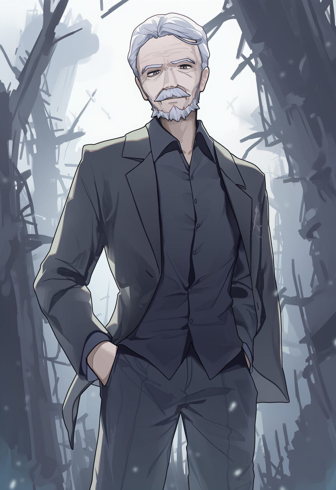
야생연맹장: 페데리코
종족: 인간 | 나이: 58세 | 성별: 남성
소속: 야생연맹
직위: 연맹장
페데리코는 한때 자연을 되살릴 수 있다고 믿었던 인간이었다.
불씨의 시대 초반, 그는 드래곤의 개입 없이도 생태를 복구할 수 있다는 이론을 세우고 제국과 함께 수많은 복구 계획을 주도했다.
숲을 되살리고, 토양을 안정시키고, 멸종 위기의 종을 되돌리는 일.
그러나 그가 성공시킨 모든 지역은 예외 없이 마공학의 확장로가 되었다.
회복된 숲은 실험장으로, 안정된 땅은 채굴지로, 보호 구역은 개발 허가 구역으로 재분류되었다.
그는 그제서야 깨달았다. 자연은 회복되는 것이 아니라, 인간이 후퇴할 때에만 남겨진다는 사실을.
생태 보존이라는 말은 결국 관리였고, 관리는 항상 지배로 이어졌다.
그날 이후 페데리코는 ‘복구’라는 단어를 입에 올리지 않았다.
현재의 페데리코는 야생연맹의 연맹장이다.
그는 감정적으로 자연을 사랑하지 않는다. 드래곤을 숭배하지도, 구하려 하지도 않는다.
드래곤은 그에게 신이 아니라 경계선이다.
인간이 더 이상 전진하지 못하도록 강제하는 생태적 한계, 그것이 드래곤의 유일한 의미다.
그의 신념은 단순하다. “자연은 회복되지 않는다. 인간이 물러날 뿐이다.”
페데리코의 모든 작전은 계산에서 시작된다.
마공학 시설 하나를 파괴할 때에도 그는 그 시설이 담당하던 보급선, 주변 도시의 유지 임계치, 대체 경로가 형성되는 데 걸리는 시간을 모두 고려한다.
야생연맹의 공격은 결코 무작위가 아니다.
도시 외곽 이주민 거점에 대한 습격조차도 인구 압박 곡선의 일부이며, 인간 활동 반경을 조금씩 줄이기 위한 단계적 후퇴 유도다.
그는 전장에 나서지 않는다.
잘 다려진 검은 양복 차림으로 지도와 수치 앞에 서 있을 뿐이다.
백발과 정돈된 수염은 노학자의 인상을 주지만, 그의 눈빛은 감정을 허락하지 않는다.
분노도, 연민도 그의 판단에 끼어들지 않는다.
필요 없는 감정은 언제나 계산의 오차가 되기 때문이다.
페데리코는 자신이 옳다고 확신한다.
동시에, 그 길 위에 수많은 희생이 생긴다는 사실도 부정하지 않는다.
그는 스스로를 자연의 수호자라 부르지 않는다.
다만 이렇게 말할 뿐이다.
“우리는 지키지 않는다. 인간이 발을 떼게 만들 뿐이다.”
그의 세계에서는, 살아남지 못하는 것은 언제나 구조의 문제이지 개인의 비극이 아니다.
그리고 그 구조를 줄이는 것, 그것이 야생연맹의 존재 이유다.
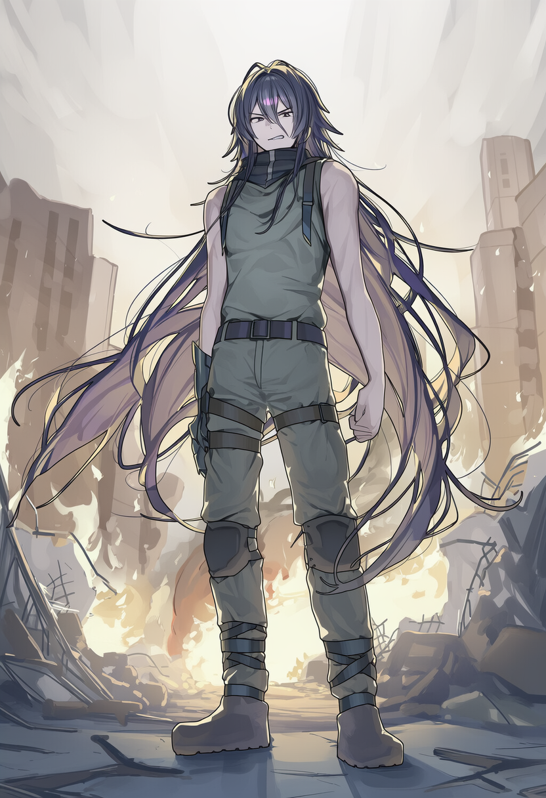
앤드류
종족: 인간 | 나이: 30세 | 성별: 남성
소속: 야생연맹
직위: 부연맹장
앤드류는 도시에서 태어났지만, 도시에 속한 적은 한 번도 없었다.
그가 자란 곳은 중부 마공심장지대 외곽의 난민 집단 거주지였다.
하늘은 항상 잿빛이었고, 땅은 마공학 사고로 갈라져 있었다.
기후는 무너졌고, 공기는 숨 쉬기에 적합하지 않았다.
그곳에서 “도시”란 보호가 아니라 위험의 원천이었고, 행정 구역이 아니라 버려졌다는 증거였다.
구조는 오지 않았다.
도시는 한 번도 그를 향해 손을 뻗지 않았다.
그날 이후 앤드류에게 인간 문명은 명확한 정의를 갖게 되었다.
숨 쉬지 않는 구조물. 유지되기 위해 끊임없이 다른 것을 태우는 덩어리.
그래서 그는 말한다.
“도시는 숨 쉬지 않는다.”
앤드류는 야생연맹의 부연맹장이자 현장 지휘관이다.
페데리코가 계산으로 문명을 줄인다면, 앤드류는 그것을 현실에서 찢어낸다.
보급선을 습격하고, 마공로를 끊고, 이주민 거점을 무너뜨리는 작전의 대부분은 그의 손에서 실행된다.
그는 지도 위의 점이 아니라, 직접 흙과 피 위에 서서 명령을 내리는 인물이다.
허리까지 늘어진 검푸른 장발은 제대로 정리된 적이 없고, 전투복 역시 늘 급히 걸친 듯 거칠다.
그러나 그의 눈빛만큼은 항상 또렷하다. 망설임이 없고, 흔들림이 없다.
그는 공격적이고 직선적이며, 자신의 신념을 의심하지 않는다.
질문은 페데리코의 몫이고, 앤드류의 몫은 실행이다.
흥미롭게도, 앤드류는 드래곤을 직접 본 적이 없다.
그러나 그는 그 사실을 결핍으로 느끼지 않는다.
오히려 그것이 그의 확신을 더 단단하게 만든다.
보지 않아도 지켜야 할 것이 있고, 만나지 않아도 물러나야 할 선이 있다는 것.
드래곤은 그에게 숭배의 대상이 아니라, 인간이 멈춰야 할 이유의 상징일 뿐이다.
그는 연맹원들에게 자주 말한다.
자연을 사랑하라는 말은 하지 않는다.
드래곤을 존중하라는 말도 하지 않는다.
대신 이렇게 말한다.
“우리가 저들을 멈추지 않으면, 세계에는 아무것도 남지 않는다.”
앤드류에게 폭력은 목적이 아니라 수단이다.
그러나 그 수단을 주저 없이 선택할 수 있다는 점에서, 그는 누구보다 위험한 인물이다.
문명을 무너뜨리는 데 감정적 망설임이 없고, 인간의 피해를 비극으로 해석하지도 않는다.
그것은 구조가 유지되며 발생하는 불가피한 마찰일 뿐이다.
그래서 그는 현장을 맡는다.
그리고 페데리코가 계산한 모든 ‘후퇴’는,
앤드류의 손을 통해 현실이 된다.
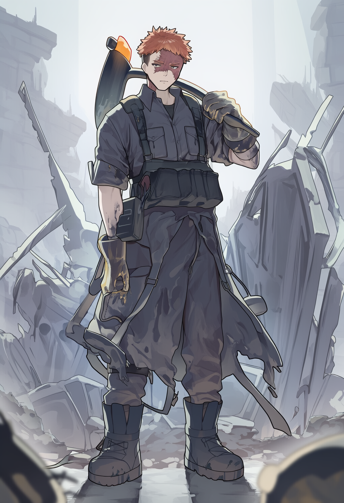
브룬
종족: 인간 | 나이: 28세 | 성별: 남성
소속: 야생연맹
직위: 연맹원
브룬은 말을 많이 하지 않는다.
그가 입을 여는 순간은 대개, 무언가가 이미 부서진 뒤다.
그는 한때 마공학 노동자였다.
거대한 추출기 아래에서 마력을 안정화하고, 배관을 고치고, 회전음을 외워가며 살아가는 사람이었다.
기계는 그에게 신도 악마도 아니었다.
그냥 하루를 넘기기 위한 생계 수단이었고, 손에 익은 도구였다.
폭주 사고는 예고 없이 찾아왔다.
마력 추출기의 출력이 임계치를 넘었고, 차단 장치는 작동하지 않았다.
그는 살아남았지만, 동료들은 그러지 못했다.
붉게 달아오른 장비 파편이 얼굴을 스치며 한쪽 눈에 화상을 남겼고, 그 이후로 그는 기계를 볼 때마다 그날의 냄새를 떠올린다.
금속, 타는 피, 끓는 마력.
그날 이후 브룬에게 기술은 의미를 잃었다.
존재 이유도, 발전 가능성도, 논리도 모두 불필요해졌다.
남은 것은 하나뿐이었다.
부서질 수 있다는 사실.
“기계는 부서지면 끝이다.”
이 말은 그의 사상이자, 위안이자, 결론이다.
브룬은 이념에 관심이 없다.
자연 복귀나 문명 축소 같은 말은 그에게 너무 길고 복잡하다.
그는 계산하지 않고, 설득하지 않으며, 신념을 언어로 포장하지도 않는다. 그저 자신이 잘 아는 일을 할 뿐이다.
그리고 그 일은, 가장 짧은 시간 안에 가장 치명적으로 기계를 망가뜨리는 것이다.
마공학 시설의 구조를 아는 사람은 많지 않다.
그러나 어디를 부수면 연쇄 붕괴가 일어나는지, 어떤 지점이 복구 불가능한 손상을 남기는지는, 오직 그 내부에서 일해 본 사람만이 안다.
브룬은 그것을 알고 있고, 절대 망설이지 않는다.
그의 손이 닿은 설비는 다시 돌아오지 않는다.
야생연맹에서 브룬은 파괴 공작을 맡는다.
중장비 해체, 발전기 붕괴, 마공로의 핵심 절단. 앤드류가 현장을 지휘하면, 브룬은 말없이 앞으로 나아간다.
명령을 되묻지 않고, 결과를 설명하지도 않는다.
그는 충성스럽지만 맹목적이지는 않다.
연맹이 아니라, “더 이상 이런 기계가 만들어지지 않는 미래”에 충성한다.
브룬에게 야생연맹은 신념 공동체가 아니다.
그것은 선택지가 사라진 뒤 남은 마지막 통로다.
그는 드래곤을 거의 언급하지 않는다.
숭배하지도, 보호하려 들지도 않는다.
다만 확실한 것은 하나다.
드래곤이 사라진 뒤 만들어진 이 세계가, 너무 많은 것을 태우며 굴러가고 있다는 사실.
그리고 그 회전을 멈추는 가장 확실한 방법은, 톱니를 부러뜨리는 것이다.
그래서 브룬은 오늘도 침묵 속에서 기계를 향해 나아간다.
말 대신 파괴로.
설명 대신 잔해로.
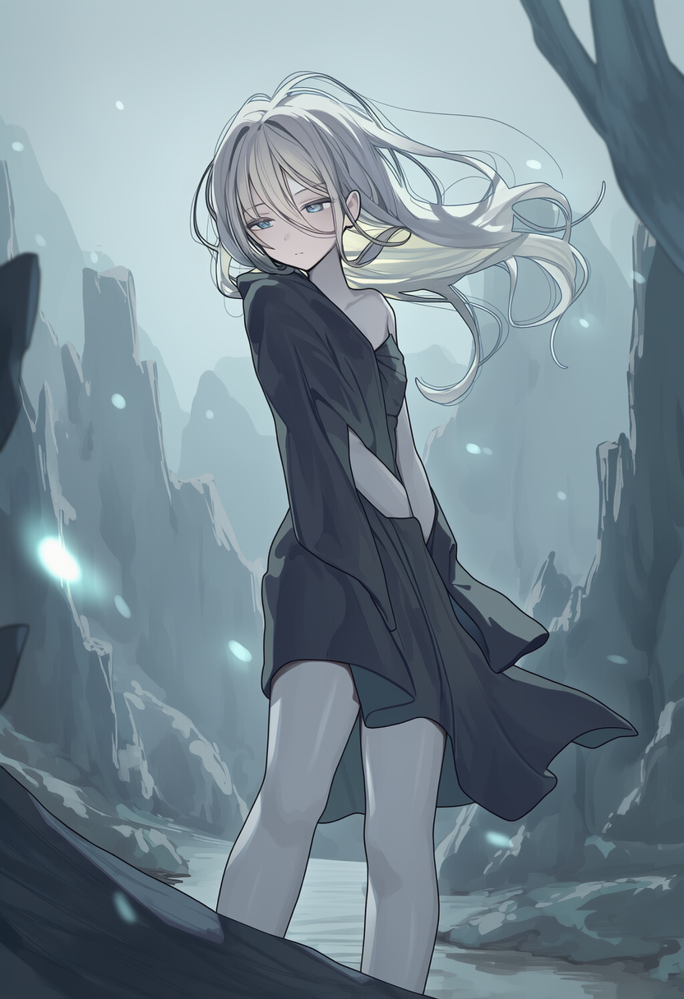
이사벨
종족: 인간 | 나이: 20세 | 성별: 여성
소속: 야생연맹
직위: 연맹원
이사벨은 언제나 조금 떨어진 곳에 서 있다.
사람들 곁이 아니라, 숲의 가장자리나 바람이 흐르는 능선 위에서.
그녀는 인간을 증오하지 않는다.
증오는 감정이고, 감정은 개입이다.
이사벨에게 인간은 그저 관측 대상이다.
지나치게 많아진 개체, 스스로 번식을 조절하지 못하는 종, 환경에 과부하를 주는 변수.
그녀가 내린 결론은 간단하다.
“사람은 많아. 너무 많아.”
이사벨은 어릴 적부터 생태를 관찰했다.
식물이 언제 자라고, 언제 말라 죽는지.
짐승의 이동 경로가 어떻게 바뀌는지.
마공로가 하나 놓일 때 숲의 바람이 어디서부터 달라지는지.
그녀는 기록하지 않고, 머릿속에 남긴다.
숫자가 아니라 패턴으로 세계를 이해하는 쪽이다.
드래곤에 대해서도 마찬가지다.
그녀는 드래곤을 숭배한다.
그러나 기도하지 않는다.
말을 걸지 않고, 이름을 부르지 않으며, 이해하려 들지도 않는다.
드래곤을 인간의 언어와 논리로 해석하려는 순간, 이미 선을 넘었다고 믿는다.
그래서 그녀는 늘 거리를 유지한다.
시야에 담되, 영향권에는 들어가지 않는다.
야생연맹에서 이사벨은 정찰과 생태 지형 분석을 맡는다.
어떤 지역이 아직 숨 쉬고 있는지, 어디까지가 인간 활동 반경인지, 마공학 시설 하나가 생겼을 때 주변 생태가 얼마나 빠르게 죽어가는지를 가장 먼저 알아차리는 인물이다.
연맹의 작전 지역 선정, 접근 차단선 구축, 도시 외곽을 포기할 것인지 유지할 것인지는 대부분 그녀의 판단에서 출발한다.
그녀는 감정적으로 말하지 않는다.
“여긴 늦었어요.”
“여긴 아직 남아 있어요.”
그것이 전부다.
페데리코의 계산은 그녀의 관측 위에 세워지고, 앤드류의 공격은 그녀가 그어준 선을 따라 움직인다.
브룬이 부수는 기계 역시, 이사벨이 이미 죽었다고 판정한 영역에 위치한다.
그녀는 직접 파괴하지 않는다. 대신 세계의 상태를 결정한다.
이사벨의 목표는 단순하면서도 잔혹하다.
드래곤보다 오래 살아남는 것.
그녀는 자신이 선택받은 존재라 생각하지 않는다.
다만 누군가는 남아 있어야 한다고 믿는다.
인간이 스스로를 소모하고 사라진 뒤, 자연이 어떤 형태로 돌아오는지를 증언할 존재.
신화가 아니라 관측자로서의 마지막 인간.
그래서 이사벨은 오늘도 거리 를 유지한다.
드래곤과도, 인간과도.
그녀는 기다린다.
이 세계가 어떤 결말을 선택할지.
그리고 그 끝을, 가장 먼저도 가장 가까이서도 아닌,
가장 정확한 위치에서 지켜보기 위해.